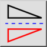
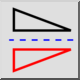
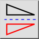
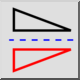

Vertikal spiegeln
Werkzeugleiste / Symbol:
 

Menü: Modifizieren > Vertikal spiegeln
Tastenkürzel: F, V
Kommandos: flipvertically | fv
Werkzeugleiste / Symbol:
 

Menü: Modifizieren > Vertikal spiegeln
Tastenkürzel: F, V
Kommandos: flipvertically | fv
Diese Funktion spiegelt die aktuelle Auswahl vertikal.